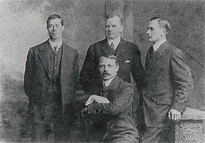

ოფიცერი
>უილიამ მერდოკი, 39 წლის, მსახურობდა უამრავ White Star ხომალდზე. ის შეუერთდა ტიტანიკს, როგორც პირველი ოფიცერი და შეჯახების დროს ხიდზე იმყოფებოდა და გემის შემობრუნების ბრძანება გასცა. ის დაეხმარა ქალებისა და ბავშვების სამაშველო ნავებში ჩატვირთვას. ის სტიქიას ვერ გადაურჩა და მისი ცხედარიც ვერ იქნა ამოღებული.
